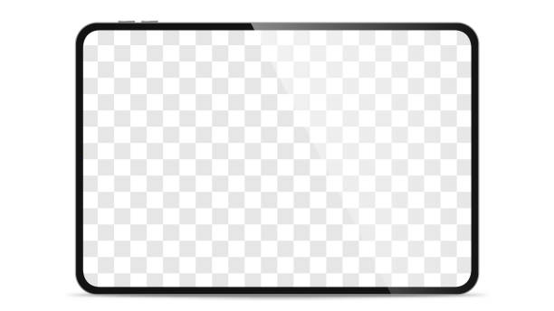

Sistem Pengurusan Audit Dalaman
Audit dalaman jabatan anda, dalam satu sistem.AK
Muat naik memo, semak penemuan, hantar tugasan dan pantau respons dalam satu aliran kerja.
MINTA DEMO Lihat Ciri-ciri.docx → rekod digital tanpa menaip semula 5 peranan kawalan akses
Digunakan Oleh:
Sedia digunakan tanpa pemasangan rumit.
Mula dengan memo audit sedia ada anda — pasukan kami bantu sediakan dalam satu sesi onboarding.
Cara Ia Berfungsi
Tujuh langkah untuk membawa satu penemuan daripada memo hingga penutupan.
Setiap penemuan melalui laluan yang sama dari mula hingga akhir — jelas, tersusun, dan boleh disemak pada bila-bila masa.
Proses penggunaan AuditKita
Import
Juru Audit muat naik memo Word.
Semak
Kandungan disemak & disunting.
Lulus
Pengarah JAD meluluskan memo.
Tugaskan
Penemuan ditugaskan ke jabatan.
Respons
Auditee respons secara kolaboratif.
Ulasan
Juru Audit menilai dengan lampu isyarat.
Selesai
Pengarah JAD lulus penutupan.
Cabaran Sedia Ada
Kerja Audit Masih Banyak Bergantung Pada Word dan E-mel
Memo hilang dalam e-mel
Memo dihantar melalui e-mel dan penemuan perlu dirujuk semula apabila membuat tindakan susulan.
Tiada penjejakan status
Juruaudit perlu menyemak e-mel dan dokumen untuk mengetahui jabatan yang sudah memberi respons dan yang masih belum bertindak.
Proses ekstrak manual
Kandungan daripada memo Word perlu dipindahkan ke rekod atau dokumen lain sebelum boleh digunakan untuk pemantauan.
Tiada rekod akauntabiliti
Maklum balas, dokumen sokongan dan perubahan status boleh berada di tempat yang berbeza, menyukarkan semakan semula.
Ciri-ciri Utama
Ciri-ciri yang tersedia dalam versi semasa AuditKita.
Import Memo Automatik
Muat naik Word — sistem ekstrak setiap penemuan, perenggan, jadual dan imej secara automatik.
Bantuan AI (AI Assist)
Cadangan automatik untuk kategori, risiko, jabatan bertanggungjawab & tindakan pembetulan — kelulusan tetap manual.
Tugasan Jabatan
Satu penemuan boleh ditugaskan kepada lebih daripada satu jabatan secara serentak, dengan tarikh akhir tersendiri.
Pusat Tugasan Peribadi
Memaparkan tindakan tertunggak yang relevan kepada peranan anda sahaja.
Notifikasi Automatik
Makluman dalam-aplikasi & e-mel pada setiap peringkat aliran kerja.
Dashboard Pentadbir
Statistik pengguna, kesihatan sistem, analitik trafik dan penggunaan AI.

Semua Respons Jabatan, Dalam Satu Tempat
Bila penemuan ditugaskan kepada jabatan, setiap auditee respons terus dalam sistem.
Tiada rantaian e-mel bersilang, tiada salinan dokumen berulang — semuanya kekal dalam satu penemuan.
LIHAT CIRI-CIRIKetelusan & Audit Trail Penuh
Setiap kelulusan, tugasan dan respons direkod.
Sedia disemak pada bila-bila masa oleh juruaudit luar atau jawatankuasa — tiada rekod yang hilang.
LIHAT KENAPA AUDITKITAPrinsip Kami
AI membantu cadangkan, Anda yang meluluskan. Setiap keputusan audit kekal milik juruaudit anda.
Cadangan kategori, risiko dan tindakan pembetulan daripada AI Assist sentiasa memerlukan kelulusan manual sebelum digunakan.
Kenapa AuditKita
Dibina berdasarkan keperluan kerja audit sektor awam Malaysia.
Data Di Bawah Kawalan Organisasi
AuditKita boleh dipasang pada infrastruktur organisasi atau persekitaran awan yang dipersetujui.
Dibina Khusus Untuk Audit Sektor Awam
Aliran kerja mengikut struktur sebenar PBT, kementerian dan badan berkanun — bukan pelan generik korporat.
Akses Mengikut Peranan
Pentadbir Sistem, Pengarah JAD, Juru Audit, Penolong Juru Audit dan Auditee mempunyai akses yang berbeza mengikut tugas masing-masing.
Rekod Setiap Tindakan
Lihat siapa yang membuat perubahan, tindakan yang dibuat dan bila ia dilakukan.
Soalan Lazim
Perkara yang biasa ditanya sebelum demo.
Data disimpan dalam infrastruktur yang dikonfigurasi mengikut keperluan agensi anda — termasuk pilihan hosting on-premise atau cloud, tertakluk kepada dasar ICT jabatan.
Ya. Dokumen Word sedia ada boleh diimport terus, sistem akan mengekstrak penemuan secara automatik untuk semakan sebelum digunakan.
Tidak. Sistem ini direka mengikut aliran kerja audit sedia ada, sesuai untuk kakitangan pelbagai peringkat kemahiran IT.
Struktur harga bergantung kepada bilangan pengguna dan keperluan jabatan anda. Maklumat lengkap akan dikongsi semasa sesi demo.
Ya, integrasi boleh dibincangkan mengikut keperluan — hubungi pasukan kami butiran lebih lanjut.
Minta Demo Percuma
Lihat AuditKita berfungsi dengan data audit sebenar jabatan anda.
Isi borang di sebelah — pasukan kami akan menghubungi anda untuk menetapkan sesi demo yang sesuai.
- Sesi demo 30 minit, tiada obligasi
- Dijalankan oleh pasukan yang faham konteks audit sektor awam
- Maklum balas dalam masa 1 hari bekerja